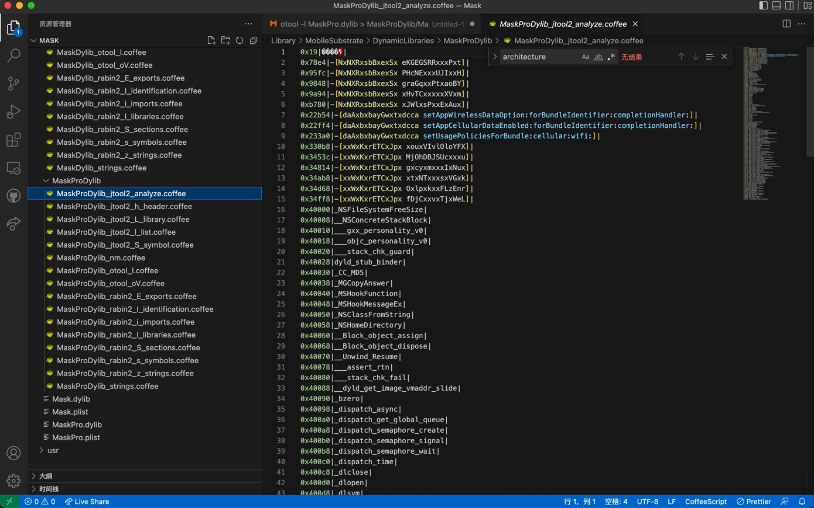

jtool2用法举例：MaskPro.dylib
-h
➜ DynamicLibraries export ARCH=arm64
➜ DynamicLibraries jtool2 -h MaskPro.dylib > MaskProDylib/MaskProDylib_jtool2_h_header.txt
输出：
Magic: 64-bit MachO (Little Endian)
Type: dylib
CPU: ARM64 (ARMv8)
Cmds: 24
Size: 3304
Flags: 0x100085
-l
➜ DynamicLibraries jtool2 -l MaskPro.dylib > MaskProDylib/MaskProDylib_jtool2_l_list.txt
输出：
LC 00: LC_SEGMENT_64 Mem: 0x000000000-0x40000 __TEXT
Mem: 0x0000078e4-0x00003e3e0 __TEXT.__text (Normal)
Mem: 0x00003e3e0-0x00003e5e4 __TEXT.__stubs (Symbol Stubs)
Mem: 0x00003e5e4-0x00003e800 __TEXT.__stub_helper (Normal)
Mem: 0x00003e800-0x00003f2c0 __TEXT.__const
Mem: 0x00003f2c0-0x00003fb08 __TEXT.__objc_methname (C-String Literals)
Mem: 0x00003fb08-0x00003fb3e __TEXT.__cstring (C-String Literals)
Mem: 0x00003fb3e-0x00003fb8d __TEXT.__objc_classname (C-String Literals)
Mem: 0x00003fb8d-0x00003fc0a __TEXT.__objc_methtype (C-String Literals)
Mem: 0x00003fc0c-0x00003fee4 __TEXT.__gcc_except_tab
Mem: 0x00003fee4-0x00003fff4 __TEXT.__unwind_info
LC 01: LC_SEGMENT_64 Mem: 0x000040000-0x48000 __DATA
Mem: 0x000040000-0x000040030 __DATA.__got (Non-Lazy Symbol Ptrs)
Mem: 0x000040030-0x000040188 __DATA.__la_symbol_ptr (Lazy Symbol Ptrs)
Mem: 0x000040188-0x000040190 __DATA.__mod_init_func (Module Init Function Ptrs)
Mem: 0x000040190-0x000040290 __DATA.__const
Mem: 0x000040290-0x0000402b0 __DATA.__cfstring
Mem: 0x0000402b0-0x0000402d8 __DATA.__objc_classlist (Normal)
Mem: 0x0000402d8-0x0000402e0 __DATA.__objc_imageinfo
Mem: 0x0000402e0-0x0000408b0 __DATA.__objc_const
Mem: 0x0000408b0-0x000040b90 __DATA.__objc_selrefs (Literal Pointers)
Mem: 0x000040b90-0x000040c60 __DATA.__objc_classrefs (Normal)
Mem: 0x000040c60-0x000040df0 __DATA.__objc_data
Mem: 0x000040df0-0x000044ea8 __DATA.__data
Mem: 0x000044ea8-0x000044fb4 __DATA.__bss (Zero Fill)
Mem: 0x000044fb4-0x000045170 __DATA.__common (Zero Fill)
LC 02: LC_SEGMENT_64 Mem: 0x000048000-0x4c000 __LLVM
Mem: 0x000048000-0x000048001 __LLVM.__bundle
LC 03: LC_SEGMENT_64 Mem: 0x00004c000-0x50000 __LINKEDIT
LC 04: LC_ID_DYLIB /Library/MobileSubstrate/DynamicLibraries/MaskPro.dylib
LC 05: LC_DYLD_INFO
Rebase info: 184 bytes at offset 311296 (0x4c000-0x4c0b8)
Bind info: 1208 bytes at offset 311480 (0x4c0b8-0x4c570)
No Weak info
Lazy info: 944 bytes at offset 312688 (0x4c570-0x4c920)
Export info: 1568 bytes at offset 313632 (0x4c920-0x4cf40)
LC 06: LC_SYMTAB
LC 07: LC_DYSYMTAB
1 local symbols at index 0
121 external symbols at index 1
75 undefined symbols at index 122
No TOC
No modtab
92 Indirect symbols at offset 0x4dc10
LC 08: LC_UUID UUID: AEBF7878-1DF0-373D-89C5-6B4DA33631D1
LC 09: LC_VERSION_MIN_IPHONEOS Minimum iOS version: 8.0.0
LC 10: LC_SOURCE_VERSION Source Version: 0.0.0.0.0
LC 11: LC_ENCRYPTION_INFO_64 Encryption: 0 from offset 16384 spanning 245760 bytes
LC 12: LC_LOAD_DYLIB /System/Library/Frameworks/AdSupport.framework/AdSupport
LC 13: LC_LOAD_DYLIB /usr/lib/libMobileGestalt.dylib
LC 14: LC_LOAD_DYLIB /System/Library/Frameworks/UIKit.framework/UIKit
LC 15: LC_LOAD_DYLIB /System/Library/Frameworks/Foundation.framework/Foundation
LC 16: LC_LOAD_DYLIB /Library/Frameworks/CydiaSubstrate.framework/CydiaSubstrate
LC 17: LC_LOAD_DYLIB /usr/lib/libobjc.A.dylib
LC 18: LC_LOAD_DYLIB /usr/lib/libc++.1.dylib
LC 19: LC_LOAD_DYLIB /usr/lib/libSystem.B.dylib
LC 20: LC_LOAD_DYLIB /System/Library/Frameworks/CoreFoundation.framework/CoreFoundation
LC 21: LC_FUNCTION_STARTS Offset: 315200, Size: 128 (0x4cf40-0x4cfc0)
LC 22: LC_DATA_IN_CODE Offset: 315328, Size: 0 (0x4cfc0-0x4cfc0)
LC 23: LC_CODE_SIGNATURE Offset: 321424, Size: 4528 (0x4e790-0x4f940)
-L
➜ DynamicLibraries jtool2 -L MaskPro.dylib > MaskProDylib/MaskProDylib_jtool2_L_library.txt
输出：
MaskPro.dylib:
/System/Library/Frameworks/AdSupport.framework/AdSupport (compatibility version 1.0.0, current version 1.0.0)
/usr/lib/libMobileGestalt.dylib (compatibility version 1.0.0, current version 1.0.0)
/System/Library/Frameworks/UIKit.framework/UIKit (compatibility version 1.0.0, current version 61000.0.0)
/System/Library/Frameworks/Foundation.framework/Foundation (compatibility version 300.0.0, current version 1677.104.0)
/Library/Frameworks/CydiaSubstrate.framework/CydiaSubstrate (compatibility version 0.0.0, current version 0.0.0)
/usr/lib/libobjc.A.dylib (compatibility version 1.0.0, current version 228.0.0)
/usr/lib/libc++.1.dylib (compatibility version 1.0.0, current version 902.0.0)
/usr/lib/libSystem.B.dylib (compatibility version 1.0.0, current version 1281.100.1)
/System/Library/Frameworks/CoreFoundation.framework/CoreFoundation (compatibility version 150.0.0, current version 1677.104.0)
-S
➜ DynamicLibraries jtool2 -S MaskPro.dylib > MaskProDylib/MaskProDylib_jtool2_S_symbol.txt
输出：
0000000000040d28 D _OBJC_CLASS_$_NbGzxsksqtAxgN
0000000000040c88 D _OBJC_CLASS_$_NxNXRxsbBxexSx
0000000000040cd8 D _OBJC_CLASS_$_daAxbxbayGwxtxdcca
0000000000040d78 D _OBJC_CLASS_$_xrxleWZnuCXPEx
0000000000040dc8 D _OBJC_CLASS_$_xxWxKxrETCxJpx
0000000000040d00 D _OBJC_METACLASS_$_NbGzxsksqtAxgN
0000000000040c60 D _OBJC_METACLASS_$_NxNXRxsbBxexSx
0000000000040cb0 D _OBJC_METACLASS_$_daAxbxbayGwxtxdcca
0000000000040d50 D _OBJC_METACLASS_$_xrxleWZnuCXPEx
0000000000040da0 D _OBJC_METACLASS_$_xxWxKxrETCxJpx
0000000000044fb4 S _g_slide
00000000000450f8 S _x
00000000000450fc S _x.146
。。。
0000000000044fdc S _y.382
U _CC_MD5
U _MGCopyAnswer
U _MSHookFunction
U _MSHookMessageEx
U _NSClassFromString
U _NSFileSystemFreeSize
U _NSHomeDirectory
U _OBJC_CLASS_$_ASIdentifierManager
U _OBJC_CLASS_$_NSBundle
U _OBJC_CLASS_$_NSData
U _OBJC_CLASS_$_NSDate
U _OBJC_CLASS_$_NSDateFormatter
U _OBJC_CLASS_$_NSDictionary
U _OBJC_CLASS_$_NSFileManager
U _OBJC_CLASS_$_NSJSONSerialization
U _OBJC_CLASS_$_NSMutableData
U _OBJC_CLASS_$_NSMutableDictionary
U _OBJC_CLASS_$_NSMutableString
U _OBJC_CLASS_$_NSMutableURLRequest
U _OBJC_CLASS_$_NSNumber
U _OBJC_CLASS_$_NSObject
U _OBJC_CLASS_$_NSString
U _OBJC_CLASS_$_NSTimeZone
U _OBJC_CLASS_$_NSURL
U _OBJC_CLASS_$_NSURLConnection
U _OBJC_CLASS_$_NSURLRequest
U _OBJC_CLASS_$_NSURLSession
U _OBJC_CLASS_$_NSURLSessionConfiguration
U _OBJC_CLASS_$_UIDevice
U _OBJC_METACLASS_$_NSObject
U __Block_object_assign
U __Block_object_dispose
U __NSConcreteGlobalBlock
U __NSConcreteStackBlock
U __Unwind_Resume
U ___CFConstantStringClassReference
U ___assert_rtn
U ___gxx_personality_v0
U ___objc_personality_v0
U ___stack_chk_fail
U ___stack_chk_guard
U __dyld_get_image_vmaddr_slide
U __objc_empty_cache
U _bzero
U _dispatch_async
U _dispatch_get_global_queue
U _dispatch_semaphore_create
U _dispatch_semaphore_signal
U _dispatch_semaphore_wait
U _dispatch_time
U _dlclose
U _dlopen
U _dlsym
U _exit
U _free
U _getpid
U _ioctl
U _isatty
U _malloc
U _objc_autorelease
U _objc_autoreleaseReturnValue
U _objc_getClass
U _objc_msgSend
U _objc_release
U _objc_retain
U _objc_retainAutorelease
U _objc_retainAutoreleasedReturnValue
U _perror
U _pthread_create
U _sleep
U _strstr
U _syscall
U _sysctl
U _uname
U dyld_stub_binder
--analyze
➜ DynamicLibraries jtool2 --analyze MaskPro.dylib > MaskProDylib/MaskProDylib_jtool2_analyze.txt
Analyzing file...
processLoadCommands: Not a Mach-O magic (0xbebafeca)
Resolving stubs..
Not ARM64 - will not resolve stubs..
Processing __DATA..
opened companion file ./MaskPro.dylib.ARM64.AEBF7878-1DF0-373D-89C5-6B4DA33631D1
Dumping symbol cache to file
Symbolicated 131 symbols and 0 functions
➜ DynamicLibraries mv MaskPro.dylib.ARM64.AEBF7878-1DF0-373D-89C5-6B4DA33631D1 MaskProDylib/MaskProDylib_jtool2_analyze.txt
输出：
